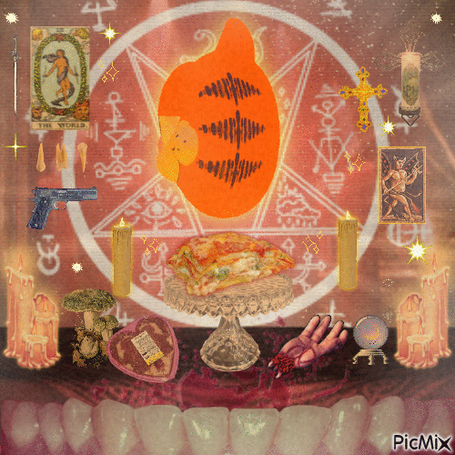

Scripture

the word of garf
Its hard to say where Garfism first originated, every year it seems theres new relics and artifacts discovered. Scripture says Garfield was an ordinary housecat from an ancient civilisation.
This cat was elevated to godhood, with people beliveing the cat to be a reincarnation of their deity, but eventually developed into a deity of his own.
The cats owner, Jon, became a priest figure, who would eventually go on to betray him. this waas the beginning of the split between worhsippers of Garf and the followers of Jon.
Followers of Jon belive Garfield was possessed by an evil entity, and is not a true god. this is of course blasphemy.
